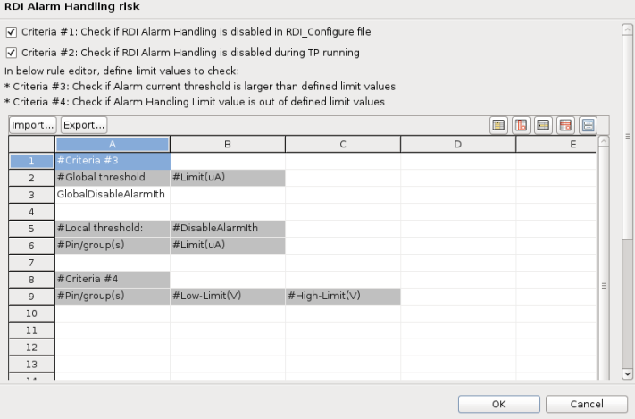
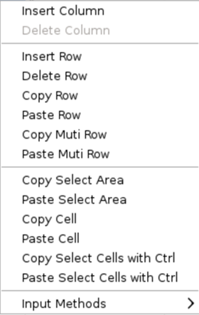
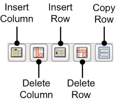

Preferences for RDI alarm handling risks
You can specify which risks to include in the RDI alarm.
Specify the preferences on the RDI Alarm Handling risk page under Check general risks (SmartRDI based) in the Preferences window before executing the RDI alarm handling risk check.

- Criteria #1: Check if RDI Alarm Handling is disabled in RDI_Configure file
- This criteria checks the value of the ALARM_HANDLING_DCVI_ENABLE parameter in the RDI alarm setup file. If the value is set to true, no risk is reported. If the value is false, the release checker reports a risk.
- Criteria #2: Check if RDI Alarm Handling is disabled during TP running
- This criteria checks if the RDI command rdi.alarm().enable() or rdi.alarm().pin().enable() is disabled during the execution of the test program. If either of the command is set to enable(0), the release checker reports a risk.
- Criteria #3: Check if Alarm current threshold is larger than defined limit values
- This criteria checks whether the current threshold specified for RDI
alarm handling exceeds the limits specified in the table in this window.
In the table, define the global current limit in the #Limit(uA) column beside GlobalDisableAlarmIth, and define the current limit for pins or pin groups by entering the name of the pins or pin groups in the Pin/group(s) column under #Local threshold and the current value in #Limit(uA) column under #DisableAlarmIth.
- Criteria #4: Check if Alarm Handling limit value is out of defined limit values
- This
criteria checks whether the voltage limits specified for RDI alarm handling
exceeds those specified in the table in this window.
In the table, define the limits by entering the name of the pins or pin groups in the Pin/group(s) column under #Criteria #4, the low voltage limit in the #Low-Limit(V) column, and the high voltage limit in the #High-Limit(V) column.
To add or delete a column or a row in the table, right-click in the table to see the available actions.

Or, click the buttons at the top right of the table.

If you want to reuse the configurations in the table, click the Export button to save them as a CSV file. You can import the saved file in another configuration by clicking the Import button.
Functional changes
- Introduced in SmarTest 7.10.1